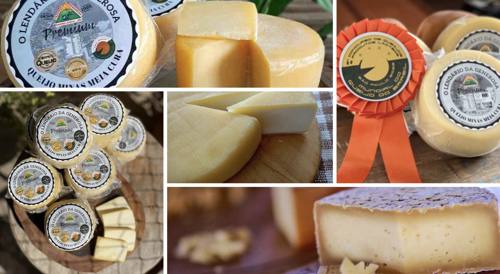

Lendário da generosa

Lendário da Generosa is a signature cheese from Fazenda Generosa, located in
Andrelândia/MG. This half-cured Minas cheese is aged for 40 days. it won a Gold medal
at the 2021 World Cup, Gold at the CNA Brasil 2022, Bronze at the 2022 World
Cup and Silver at the international World Cheese Award.
There is no shortage of prizes and flavor for this delicious and typical artisan Minas cheese
With fruity notes, soft texture and mild flavor, it wins over everyone !

